-
Por que as algas não estão incluídas no reino Vegetal?
-
Que característica, relacionada à nutrição, torna as algas semelhantes aos vegetais?
-
Que benefícios as algas podem trazer para o ser humano?

Neste capítulo serão abordadas as habilidades
EM13CNT202
O que são algas?
A palavra “alga”, seguindo um modelo de classificação natural, não apresenta significado taxonômico, pois reúne diversos grupos de organismos que podem não ter proximidade filogenética. Neste livro, o termo “alga” é aplicado aos
organismos que são eucariontes, unicelulares ou pluricelulares, fotossintetizantes e que, diferentemente das plantas, não têm embriões dependentes do tecido materno.
As algas podem ser encontradas em diversos hábitats
como na água doce, mares, oceanos, rochas, troncos de árvores, superfície de geleiras e nas fontes termais. Muitas delas, entretanto, podem viver associadas aos fungos, formando liquens, ou nos tecidos dos animais, como corais
e moluscos.
O surgimento das algas no planeta Terra data, aproximadamente, de 2 bilhões de anos e dependeu de um evento conhecido como endossimbiose. De acordo com a teoria endossimbiótica, os cloroplastos, organelas responsáveis
pela fotossíntese, teriam surgido a partir do englobamento de procariotos fotossintetizantes que passaram a viver em simbiose dentro das células eucarióticas. A presença dos cloroplastos nessas células foi determinante para
o surgimento dos organismos atualmente conhecidos como algas.
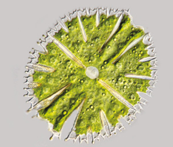
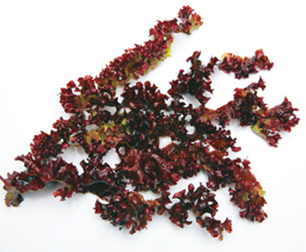
Exemplares de algas de diferentes grupos. A. Fotomicrografia da alga verde unicelular Micrasterias papilifera. Tamanho médio (comprimento): 130 µm; B. Alga vermelha pluricelular da espécie Chondrus crispus. Tamanho médio
(comprimento): 20 cm.
Características gerais
Todas as algas possuem células eucarióticas, ou seja, o DNA é separado do citosol pela carioteca e fica dentro do núcleo celular. Nas células das algas são encontradas diversas organelas, como ribossomos, mitocôndrias,
retículo endoplasmático (liso e granuloso), peroxissomos, vacúolos, complexo golgiense e cloroplastos.
As algas que vivem na água doce também possuem vacúolos contráteis, estruturas responsáveis pela eliminação
do excesso de água que entra nas células por osmose. Muitas possuem flagelos para a locomoção no meio aquático. Os flagelos podem estar presentes nas células dos organismos unicelulares, em gametas ou em esporos.
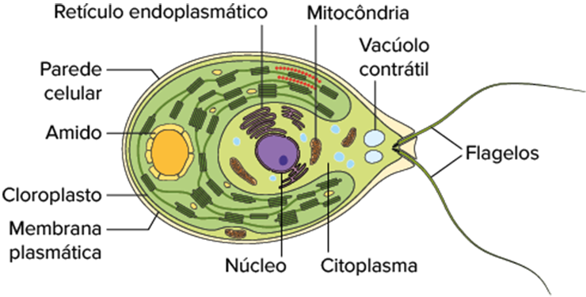
Representação esquemática da célula eucariótica da alga verde Chlamydomonas.
Uma característica comum às células das algas e plantas é a presença de cloroplastos. Os cloroplastos de todas as algas contêm clorofila A, pigmento essencial à fotossíntese. Além da clorofila A, existem outros tipos de
clorofila, como B, C ou D, com estruturas moleculares ligeiramente diferentes.
Os cloroplastos também podem ter outros pigmentos, como carotenoides e ficobilinas, que mascaram a cor verde da clorofila, tornando
as algas douradas, vermelhas ou marrons. O número de membranas lipoproteicas do cloroplasto e os tipos de pigmentos fotossintetizantes são critérios importantes para a classificação das algas nos diferentes grupos.
O tipo de molécula utilizada como reserva energética varia muito nos grupos, sendo um dos critérios utilizados na separação das algas. As diatomáceas, por exemplo, armazenam óleos e crisolaminarina (polissacarídeo específico desse
grupo). As algas verdes armazenam amido dentro dos cloroplastos, uma característica compartilhada com os vegetais.
A maioria das algas possui parede celular, ausente apenas nas euglenófitas. Em geral, a parede celular
é formada por celulose, combinada com outras substâncias como alginatos, carragenina, ágar e carbonato de cálcio, dependendo do grupo. Nos dinoflagelados, a parede celular é interna e formada por placas de celulose confinadas
em estruturas denominadas alvéolos. Em algumas espécies, como as diatomáceas, a parede é formada por substâncias pécticas, impregnada por sílica e não possui celulose.
As algas podem ser unicelulares, coloniais ou pluricelulares.
As pluricelulares são talófitas (do grego thallus e phytos, que significam, respectivamente, “pequeno ramo” e “planta”), ou seja, o corpo é formado por um talo que possui um conjunto de células no qual não se distinguem tecidos
ou órgãos específicos e podem apresentar diversos tipos morfológicos: filamentoso, foliáceo, crostoso ou cenocítico.
Em muitas algas pardas, o talo possui partes diferenciadas, que lembram as raízes, os caules e as folhas
das plantas terrestres. O apreensório fixa a alga ao substrato servindo de âncora. O estipe é uma estrutura cilíndrica que sustenta as lâminas, semelhante a um caule. As lâminas são projeções semelhantes às folhas e aumentam
a superfície para maior absorção de luz.
Diversas espécies também possuem flutuadores, estruturas ocas em forma de bolhas que boiam e ajudam a manter as lâminas mais próximas da superfície, onde a luz solar é mais intensa.
Algumas espécies, como as algas pardas do gênero Macrocystis, são gigantes e podem alcançar até 60 metros de comprimento
Reprodução
Nas algas, a reprodução pode ser assexuada ou sexuada. Na assexuada não ocorre fecundação nem meiose, produzindo descendentes geneticamente iguais. Na sexuada ocorrem a fecundação e a meiose, produzindo descendentes geneticamente
diferentes entre si e a alga parental. Em alguns casos, o ciclo de vida de uma alga pode envolver os dois tipos de reprodução
Reprodução assexuada
A reprodução assexuada, mais comum entre as algas unicelulares, é a bipartição ou cissiparidade, processo em que uma alga duplica o seu DNA e depois se divide para formar dois novos indivíduos geneticamente iguais. No caso das
algas pluricelulares, uma forma de reprodução assexuada é a fragmentação do talo, processo em que o talo se quebra em pedaços que podem se regenerar e formar novas algas com talos completos.
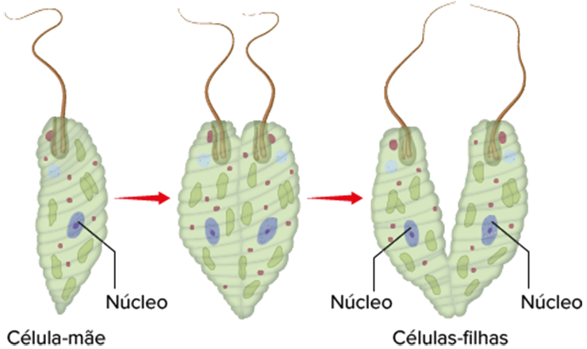
VAN DEN HOEK, C., MANN, D., JAHNS, H. M. Algae: An Introduction to Phycology. Cambridge: University Press, 1996.
Representação esquemática da reprodução por bipartição de uma alga unicelular do grupo das euglenófitas.
Outro tipo de reprodução assexuada muito comum nas algas pluricelulares é a esporulação, processo de produção de esporos a partir de divisões mitóticas das células do talo. De uma forma geral, esses esporos possuem flagelos e motilidade
própria, denominados zoósporos. Ao serem liberados na água pelas algas, os zoósporos nadam e se fixam em locais favoráveis para formar novos organismos.
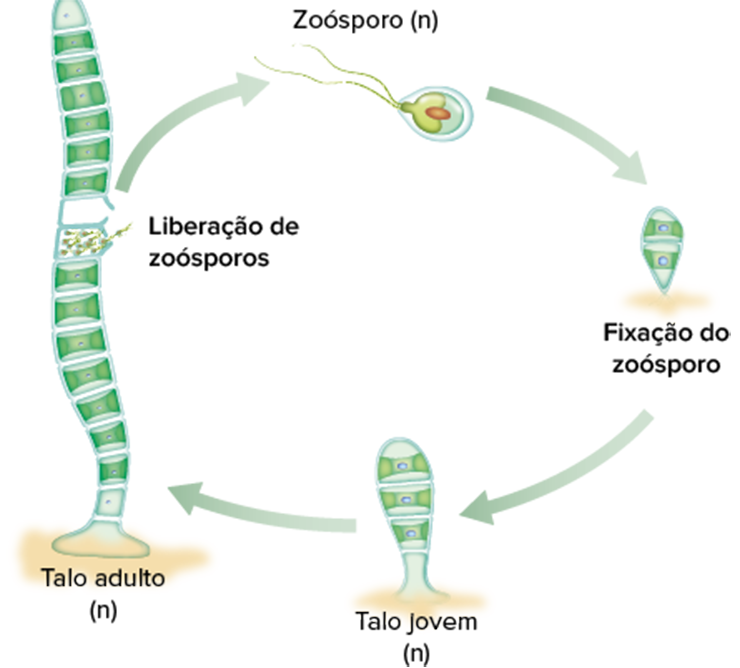
VAN DEN HOEK, C., MANN, D., JAHNS, H. M. Algae: An Introduction to Phycology. Cambridge: University Press, 1996.
Representação esquemática do ciclo de vida da alga verde do gênero Ulothrix, com reprodução assexuada por
meio da produção de esporos.
Reprodução sexuada
A reprodução sexuada na maioria das algas envolve, da mesma maneira que nos animais e vegetais, a fecundação, ou seja, a união de gametas haploides (n) para a formação de um zigoto diploide (2n). Após a formação do zigoto, em algum
momento do ciclo de vida ocorre a divisão meiótica, processo que produz células-filhas haploides.
Em muitas algas é comum um ciclo de vida com alternância de gerações de indivíduos haploides e diploides, fenômeno também
conhecido como metagênese. Tendo em vista a grande diversidade de algas, observa-se uma grande variação dos tipos de ciclos sexuais.
Em algumas algas filamentosas, como a alga verde Spirogyra, ocorre a reprodução sexuada
por meio de um mecanismo conhecido como conjugação. Nesse processo, ocorre a formação de um tubo de conjugação entre organismos diferentes que possibilita a transferência de citoplasma de um filamento, denominado “+” ou masculino,
para o outro filamento, denominado “–” ou feminino. Após a transferência de citoplasma ocorre a união dos núcleos, processo conhecido como cariogamia ou fecundação, com formação do zigoto (2n) que se divide por meiose e forma
novos filamentos haploides da alga.
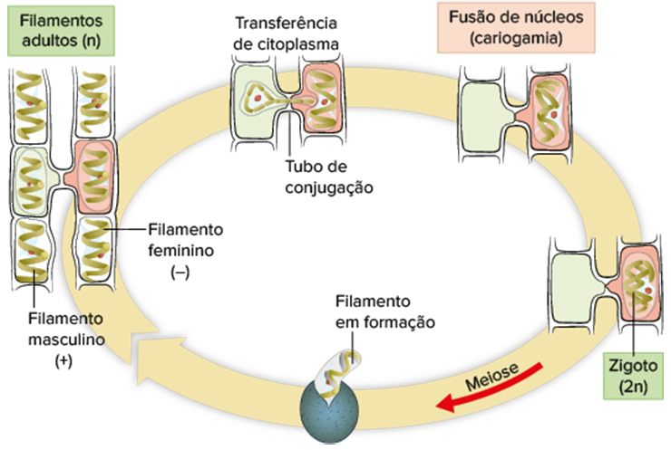
VAN DEN HOEK, C., MANN, D., JAHNS, H. M. Algae: An Introduction to Phycology. Cambridge: University Press, 1996.
Representação esquemática do ciclo de vida da alga verde do gênero Spirogyra, com reprodução sexuada por conjugação.
Importância ecológica
As algas microscópicas, principalmente do grupo das diatomáceas e dinoflagelados, fazem parte do fitoplâncton, uma comunidade de seres vivos que ficam na superfície do ambiente aquático. Além de algas, o fitoplâncton também é constituído
por cianobactérias, bactérias que realizam fotossíntese, constituindo a comunidade de produtores fotossintetizantes.
Por meio da fotossíntese, organismos do fitoplâncton absorvem energia luminosa e a transformam em energia
química armazenada nas moléculas orgânicas, presentes em suas células. Organismos do fitoplâncton são fonte de alimento para o zooplâncton, que, por sua vez, são ingeridos por animais maiores como peixes, moluscos e crustáceos.
Dessa forma, o fitoplâncton constitui a base das cadeias alimentares existentes no ambiente aquático
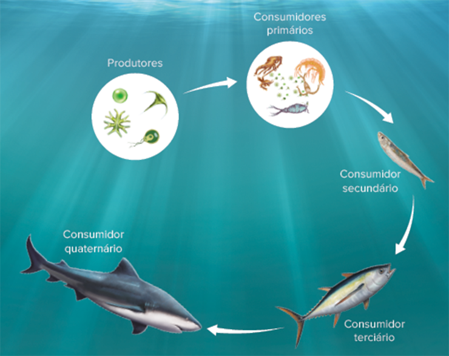
Representação esquemática de uma cadeia alimentar em ambiente aquático, na qual as algas microscópicas e as cianobactérias do fitoplâncton atuam como produtoras.
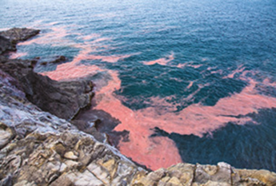
Fenômeno da proliferação de algas tóxicas no mar de Yamaguchi (Japão).
 Mais
Mais
Importância das algas, Meio Ambiente por inteiro Canal Meio Ambiente
Reportagem dedicada à importância das algas na natureza e no nosso dia a dia. Disponível em: (http://p.p4ed.com/ QWPWL).
Além da produção de matéria orgânica, a fotossíntese realizada pelo fitoplâncton também é responsável pela maior parte da produção do gás oxigênio (O2) presente na atmosfera. Estima-se que as algas e alguns procariontes
do fitoplâncton sejam responsáveis por mais de 50% da fotossíntese que ocorre no planeta, ou seja, se estes organismos desaparecessem, a concentração de gás oxigênio na atmosfera diminuiria a ponto de ser impossível
a sobrevivência da maioria das espécies existentes, incluindo o ser humano.
Algumas alterações nas variáveis ambientais podem contribuir com a reprodução acelerada da população de dinoflagelados tóxicos, formando
manchas avermelhadas na superfície do mar, fenômeno conhecido como maré vermelha, floração ou proliferação de algas tóxicas.
O aumento de nutrientes, principal causa do fenômeno, pode ocorrer de forma natural,
pelo afloramento de águas mais profundas (ressurgência) ou pela atividade humana, como a emissão de esgoto no mar ou a lixiviação de fertilizantes sintéticos utilizados nas propriedades rurais. Os nutrientes são metabolizados
pelas algas, estimulando a sua proliferação.
Mais de 40 espécies de dinoflagelados tóxicos já foram identificadas como produtoras de toxinas capazes de matar peixes, aves, golfinhos e humanos. As substâncias tóxicas
afetam de diversas formas os animais, como o comprometimento do sistema nervoso. Moluscos e crustáceos filtradores podem absorver e concentrar a toxina sem serem prejudicados por elas, porém outros animais que os ingerem
podem sofrer intoxicação e até morrer.
Quando há proliferação de algas tóxicas, é preciso que a população local, dependente da pesca como fonte de renda e alimentação, seja alertada e a área seja interditada. O
consumo de peixes e outros organismos do local só é liberado após a análise da água e dos bivalves, moluscos filtradores que concentram as toxinas.
1
UFSM-RS 2015 A chamada “maré vermelha” é um fenômeno resultante da reprodução em demasia de certos grupos de microalgas marinhas, em especial dinoflagelados, eventualmente conferindo uma coloração avermelhada à água
do mar. Outra denominação, aplicada também ao fenômeno em águas continentais, é “floração”. Com relação a tal fenômeno, indique se as alternativas a seguir são verdadeiras (V) ou falsas (F).
( ) O despejo de esgoto e lixo nas águas é uma consequência da eutrofização.
( ) O bloqueio da passagem do sol pela camada superficial de microalgas de uma floração pode causar a morte de organismos fotossintetizantes, aumentando a quantidade de oxigênio liberado e aumentando os micro-organismos
produtores.
( ) Intoxicações de seres humanos por ingestão de frutos do mar podem ser consequência da deposição de toxinas em animais filtradores, quando as florações são formadas por algas tóxicas.
( ) A reprodução excessiva de microalgas pode ser consequência da eutrofização da água.
A sequência correta é:
- F − F − V − V
- V − F − V − F
- F − V − F − V
- V − V − F − F
- F − V − V − V
Resolução:
Alternativa: A
O despejo de esgoto e lixo nas águas é a causa da eutrofização, uma vez que a decomposição da matéria orgânica produz nutrientes que são utilizados pelas algas. O bloqueio da passagem da luz solar pela camada
superficial de microalgas de uma floração pode causar a morte de organismos fotossintetizantes, diminuindo a quantidade de gás oxigênio liberado, já que esse é um dos produtos do processo fotossintético realizado pelas algas.
Importância econômica
Muitas algas são usadas na alimentação humana, como as vermelhas, pardas e verdes que são apreciadas, principalmente, pelos povos orientais. As algas são alimentos altamente nutritivos, pois são ricas em carboidratos, proteínas,
vitaminas e minerais. Diversas espécies de algas vermelhas do gênero Porphyra, conhecidas como nori, são secas, prensadas e transformadas em folhas utilizadas no preparo de sushis, temakis e outros pratos da culinária japonesa.
Das algas pardas são extraídas os alginatos, moléculas encontradas em suas paredes celulares. Os alginatos constituem mais de 35% do peso dessas algas, quando secas, e são usados como espessantes em muitos produtos industrializados,
como sorvetes, cremes dentais, cosméticos, sabões e tintas. Nos sorvetes, o alginato dificulta a formação de cristais de gelo, garantindo a cremosidade.
Das algas vermelhas podem ser extraídas duas substâncias economicamente
importantes: o ágar e a carragenina. Essas substâncias são usadas na indústria de alimentos para dar consistência a pudins, cremes, gelatinas e sorvetes, e também na indústria de cosméticos para a produção de cremes e géis.
O ágar também é utilizado como meio de cultura de microrganismos, nos laboratórios de microbiologia, e para a produção das cápsulas de medicamentos.
As frústulas, carapaças das diatomáceas, acumulam-se no fundo dos lagos
e oceanos ao longo de milhares de anos. A rocha sedimentar formada desse depósito é o diatomito, também conhecido como terra das diatomáceas. Grandes depósitos estão espalhados em diversas áreas do planeta, como os que existem
no Brasil, especialmente na região Nordeste, onde ocorrem operações de mineração. O diatomito pode ser utilizado para a produção de abrasivos em polidores, filtros de água, tijolos refratários e como isolante em fornalhas.
Classificação das algas
Atualmente, a sistemática das algas foi modificada pela aplicação de análises moleculares, utilizadas na construção das relações filogenéticas entre os grupos. Embora boa parte da classificação tradicional tenha sido mantida após
a utilização dessa técnica, ficou claro que as algas, como um todo, não formam um grupo taxonômico natural.
Além das análises moleculares, outras características são analisadas para classificar as algas. Dentre elas podemos
destacar a organização do corpo (unicelular ou pluricelular), os tipos de clorofila (A, B, C ou D), pigmentos fotossintetizantes acessórios existentes no cloroplasto, substâncias de reserva energética estocadas nas células
e os principais componentes da parede celular. O quadro comparativo a seguir indica as principais diferenças entre os grupos de algas apresentados neste livro.
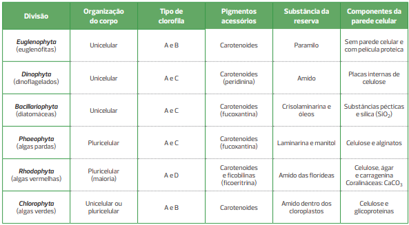
EVERT, R. F.; EICHHORN S. E. Biology of Plants. 8. ed. New York: W. H. Freeman and Company, 2013.
Quadro comparativo entre os diferentes grupos de algas.
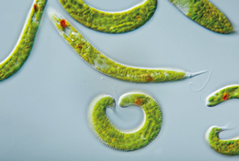
Fotomicrografia das euglenofíceas da espécie Euglena spirogyra. Nessa imagem, são visíveis os cloroplastos verdes e os estigmas avermelhados. Tamanho médio (comprimento): 70 µm.
Mixotróficos: (do grego miksis e trophos, que significam, respectivamente, “mistura” e “alimento”): são organismos autótrofos, ou seja, sintetizam moléculas orgânicas a partir de inorgânicas, e heterótrofos, já
que também utilizam matéria orgânica presente no meio ou em outros seres vivos.
Euglenófitas
As euglenófitas, como a euglena, são componentes da divisão Euglenophyta, grupo com mais de 800 espécies descritas de organismos unicelulares que vivem, predominantemente, em água doce. Esses organismos não têm parede celular,
mas sim uma película flexível abaixo da membrana plasmática.
A maioria das espécies desse grupo apresenta cloroplastos e é autótrofa. Nos cloroplastos, são encontrados os pirenoides, responsáveis pela produção
de paramilo, um polissacarídeo que fica estocado no citoplasma da célula. Os cloroplastos são envolvidos por três membranas e possuem como pigmentos as clorofilas A e B, além de carotenoides.
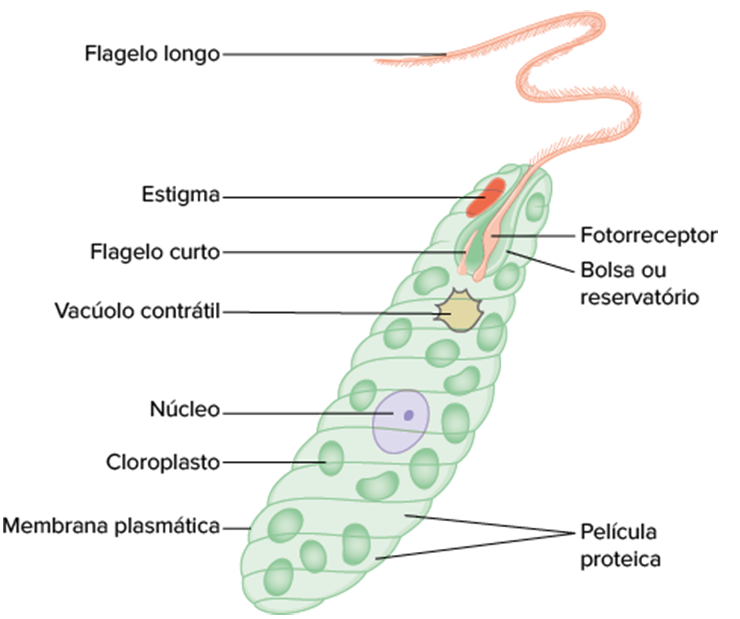
Representação esquemática da célula de uma euglenofícea.
Muitas euglenófitas podem perder os cloroplastos se permanecerem em ambiente escuro por muito tempo, porém esses organismos não morrem por isso, já que conseguem absorver moléculas orgânicas presentes no local, ou até englobar
presas por fagocitose. Com esse tipo de nutrição, esses organismos são considerados mixotróficos. Diversas espécies desse grupo, entretanto, não possuem cloroplastos e apresentam nutrição exclusivamente heterotrófica.
Esses organismos apresentam uma bolsa nas extremidades da célula, denominada reservatório, no qual abrigam um ou dois flagelos. O flagelo mais longo é utilizado para o deslocamento na água e como âncora para manter
o organismo no mesmo local. O segundo flagelo é quase sempre rudimentar e não chega a emergir da célula.
Na base de um dos flagelos encontra-se um fotorreceptor (detector de luz), estrutura fundamental para que
esses organismos possam encontrar luz que será utilizada como fonte de energia na fotossíntese. Outra estrutura comum nesses organismos é o estigma ou ocelo, um escudo de pigmentos que protege o fotorreceptor do excesso
de luz.
A maioria das euglenófitas possui uma organela intracelular denominada vacúolo contrátil, responsável pela eliminação do excesso de água que entra nos organismos por osmose, já que vivem em ambientes hipotônicos
(água doce).
Dinoflagelados
Os dinoflagelados, da divisão Dinophyta, são componentes importantes do plâncton marinho e da água doce. Existem cerca de 4 mil espécies descritas, com formatos e tamanhos variados. Todas são unicelulares e apresentam dois
flagelos ligados à célula, por meio de sulcos. Um sulco
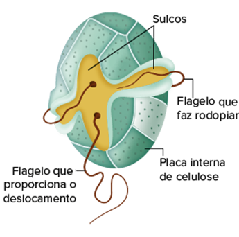
Representação esquemática da célula de um dinoflagelado indicando os sulcos, os dois flagelos e as placas internas de celulose.
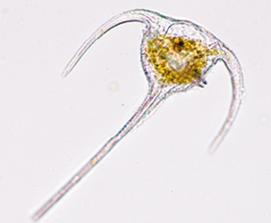
Fotomicrografia do dinoflagelado do gênero Ceratium. Tamanho médio (comprimento): 45 µm. Observe a cor dourada e brilhante determinada pela presença de carotenoides.
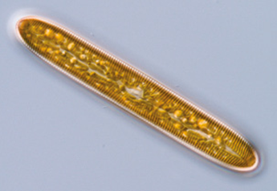
Fotomicrografia da diatomácea do gênero Pinnularia, com destaque para a cor dourada, determinada pela presença do pigmento fucoxantina. Tamanho médio (comprimento): 150 µm.
envolve a região central da célula como um cinto e o batimento do flagelo desse sulco faz a célula rodopiar como um pião, característica que deu o nome aos dinoflagelados (do grego dinos, que significa “rodopiar”). O outro
sulco fica perpendicular ao primeiro e o batimento desse flagelo é responsável pela locomoção da célula.
Cerca da metade dos organismos desse grupo é autótrofa ou mixotrófica. Os cloroplastos têm três membranas
e pigmentos fotossintetizantes, dentre eles as clorofilas A e C, além de carotenoides, como a peridinina, que é característica dos dinoflagelados. A abundância de carotenoides é o que deixa os dinoflagelados com uma
cor avermelhada e brilhante, característica que inspirou o termo pirrofíceas (do grego pyrrhos e phukos, que significam, respectivamente, “flamejante” e “alga”) ou pirrofitas, utilizado para se referir aos organismos
desse grupo. Muitas espécies desse grupo apresentam as células revestidas por uma parede celular interna, denominada teca ou lórica (do grego loriga, que significa “armadura”), formada por placas de celulose localizadas
em vesículas logo abaixo da membrana plasmática denominadas alvéolos. A substância da reserva energética armazenada pelos dinoflagelados é o amido, sintetizado fora do cloroplasto e armazenado na forma de grãos no citoplasma.
Alguns dinoflagelados autótrofos vivem em endossimbiose dentro do corpo de diversos animais marinhos, como esponjas, anêmonas, corais, vermes e moluscos, determinando as diversas tonalidades de cores apresentadas
por eles. Esses dinoflagelados simbiontes não possuem placas de celulose e formam células esféricas dentro dos organismos, as zooxantelas. A relação ecológica entre os animais e as zooxantelas é um exemplo de mutualismo,
pois realizam fotossíntese e parte da matéria orgânica produzida fica disponível para os animais. Os dinoflagelados recebem abrigo e algumas moléculas resultantes do metabolismo do animal, como o gás carbônico e compostos
nitrogenados.
Diatomáceas
As diatomáceas são algas unicelulares da divisão Bacillariophyta, com cerca de 6 mil espécies já descritas. Mas os cientistas acreditam que o número total pode ultrapassar 100 mil. Esses organismos são encontrados no ambiente
marinho, na água doce e até mesmo no solo úmido. Juntamente com os dinoflagelados, as diatomáceas são os organismos mais abundantes do fitoplâncton e estão no planeta há, pelo menos, 250 milhões de anos.
As espécies
desse grupo são unicelulares e não apresentam flagelos, com exceção dos gametas masculinos de algumas espécies de formato cêntrico.
Uma peculiaridade está na parede celular, também conhecida como carapaça ou frústula,
formada por substâncias pécticas e sílica (SiO2), principal componente do vidro. A frústula apresenta diversos formatos, ornamentações e poros, que variam de acordo com a espécie. Cada frústula é formada por duas partes
ou valvas, uma ligeiramente maior que a outra, que se encaixam perfeitamente, como a base e a tampa de uma placa de petri.
A maioria das espécies é autótrofa e possui cloroplastos com três membranas. Os pigmentos
fotossintetizantes são as clorofilas A e C, além de carotenoides, como a fucoxantina. A iridescência das paredes silicosas, associadas aos pigmentos dos cloroplastos, são responsáveis pela coloração das diatomáceas,
que vai do dourado ao marrom-esverdeado.
O acúmulo de sílica na parede aumenta a densidade das algas, ficando duas vezes maior que a água do mar. No entanto, essas algas flutuam graças ao estoque de óleos, que
são menos densos que a água e ainda podem ser usados como fonte de energia. Todas as espécies desse grupo produzem, além de óleos, o polissacarídeo crisolaminarina, estocado no vacúolo das células.
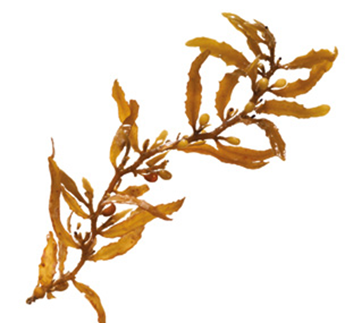
Feofícea do gênero Sargassum que fica flutuando na superfície da água. Tamanho: entre 50 e 100 cm.
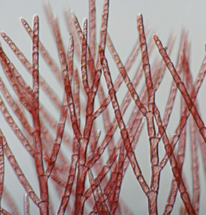
Fotomicrografia do talo de uma alga vermelha.
Algas pardas
As algas pardas, também conhecidas como feófitas (do grego phaios e phytos, que significam, respectivamente, “marrom-escuro” e “planta”), são componentes da divisão Phaeophyta, na qual foram descritas cerca de 1 500 espécies,
sendo a maioria de ambiente marinho.
Algumas algas pardas flutuam em mar aberto, como espécies do gênero Sargassum, que forma densos aglomerados no mar de Sargaços no meio do Oceano Atlântico, nas proximidades
das Ilhas Açores. Outras vivem ancoradas no fundo do mar e formam extensas florestas submersas, denominadas kelps, que constituem os hábitats para diversos organismos marinhos. A maioria das espécies, entretanto, está
fixada em rochas próximas à costa e nas zonas entre marés.
Todas as espécies desse grupo são pluricelulares e possuem o corpo formado por um talo com a anatomia mais complexa dentre as algas. Nos cloroplastos são
encontrados pigmentos fotossintetizantes, como as clorofilas A e C, e os carotenoides de cor amarelada, dentre eles a fucoxantina. A cor parda, marrom ou até verde oliva, apresentada pelos representantes desse grupo,
é resultado da combinação e concentração desses pigmentos.
Organismos desse grupo apresentam a parede celular composta de celulose e alginatos. Alginatos são polímeros viscosos de ácidos e açúcares e fornecem flexibilidade
e resistência aos talos das algas, reduzem a dessecação durante os períodos da maré baixa, quando ficam expostos, e também são utilizados como cola para fixar o apreensório nas rochas.
Algumas espécies acumulam
carbonato de cálcio na parede celular, o que confere um aspecto petrificado para essas algas. O material de reserva das feofíceas é a laminarina (polímero de glicose típico do grupo) e o manitol (álcool), depositados
nos vacúolos das células.
Algas vermelhas
As algas vermelhas, também conhecidas como rodófitas (do grego rhodos e phytos, que significam, respectivamente, “vermelho” e “planta”), são componentes da divisão Rhodophyta e podem ter sido os primeiros organismos eucariotos
fotossintetizantes, formados a partir da endossimbiose com procariotos. Das cerca de 6 mil espécies descritas de algas vermelhas, a maioria habita mares tropicais, mas também há espécies em água doce e nas superfícies
úmidas das rochas, solos ou troncos de árvores em florestas.
Existem poucos organismos unicelulares nesse grupo de algas, pois a maioria das espécies têm o corpo formado por um talo filamentoso, pluricelular e
ramificado, que cresce fixado em um substrato por meio de um apreensório simples.
As algas vermelhas apresentam cloroplastos com duas membranas e diversos pigmentos fotossintetizantes, como as clorofilas A e D,
carotenoides e ficobilinas (ficoeritrina e ficocianina). A cor avermelhada, apresentada por diversos representantes do grupo, é determinada pela grande quantidade do pigmento ficoeritrina (do grego eritros, que significa
“vermelho”), que mascara a cor verde da clorofila.
Todas as espécies possuem parede celular composta de celulose e uma camada externa de mucilagens, como ágar e carragenina (ambos polímeros de galactose). A parede
celular de muitas algas vermelhas, conhecidas comumente como algas coralináceas, também apresenta camadas de carbonato de cálcio, tornando o talo mais rígido, com aspecto petrificado.
Essas algas produzem amido
das florídeas como material de reserva energética, composto de cadeias ramificadas pequenas com 15 unidades de glicose, propriedades intermediárias ao glicogênio (presente nos animais e fungos) e amido (presente nas
clorofíceas e nos vegetais).
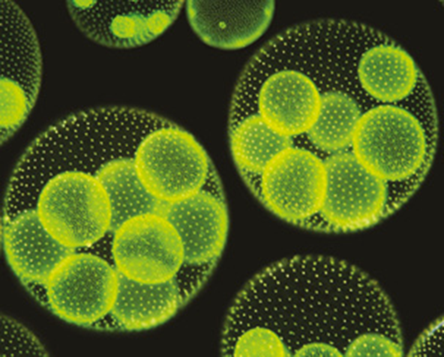
Fotomicrografia da alga colonial da espécie Volvox aureus. Tamanho médio da colônia (diâmetro): 250 µm.
Algas verdes
As algas verdes, também conhecidas como clorófitas (do grego khloros, que significa “verde”), são componentes da divisão Chlorophyta, grupo com mais de 8 mil espécies de organismos que vivem, predominantemente, em água
doce. Algumas espécies vivem no oceano, outras são componentes do fitoplâncton ou são terrestres, vivendo na neve e nas superfícies úmidas das rochas, solos ou troncos de árvores de florestas.
Algumas algas verdes
são unicelulares, como a Chlamydomonas que vive na água doce; outras formam colônias, como as do gênero Volvox; e diversas espécies são pluricelulares com talos de vários tamanhos e formatos.
A parede celular das
algas verdes é composta de celulose em quase todos os representantes do grupo, característica compartilhada com as plantas. Em algumas espécies, entretanto, também pode ocorrer depósito de glicoproteínas ou carbonato
de cálcio na parede das células.
As algas verdes são autótrofas e apresentam o cloroplasto com duas membranas, proveniente da endossimbiose primária com procarioto fotossintético. O cloroplasto possui, como pigmentos fotossintetizantes, as clorofilas
A e B e carotenoides. Algumas espécies podem ter um tom cinza e até mesmo avermelhado, dependendo da concentração de carotenoides. No interior dos cloroplastos ocorre, ainda, o armazenamento de amido, polímero de glicose
utilizado como reserva energética.

Aplicando conhecimentos
1
A figura abaixo representa a célula eucariótica da alga verde Chlamydomonas.
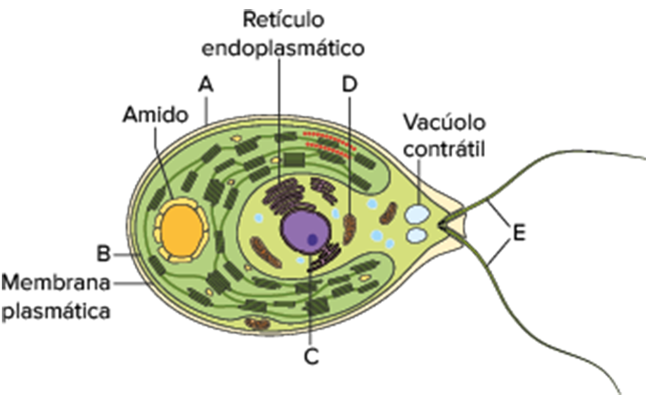
Quais são os nomes das estruturas celulares indicadas pelas letras A, B, C, D e E?
2
Alguns dinoflagelados, denominados zooxantelas, vivem dentro do corpo de diversos animais marinhos, como esponjas, anêmonas, corais, vermes e moluscos, determinando as diversas tonalidades de cores apresentadas por eles.
- Como é denominada a relação ecológica existente entre esses organismos?
- Qual o benefício para as zooxantelas e para os animais nessa relação?
3
Algumas condições podem determinar a reprodução acelerada da população de dinoflagelados tóxicos, formando manchas avermelhadas na superfície do mar, fenômeno conhecido como maré vermelha. Qual é a principal causa da ocorrência
desse fenômeno?
4
O quadro comparativo a seguir indica as diferenças entre os principais grupos de algas. Complete os espaços em branco do quadro comparativo com os termos corretos correspondentes.
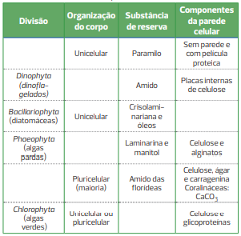
CONSOLIDANDO SABERES
1
Uece Analise as afirmações abaixo.
I. Algas são seres fotossintéticos, conhecidos como plantas do mar, e por esse motivo pertencem ao reino Plantae.
II. As algas são responsáveis pela maior parte do gás oxigênio liberado diariamente na biosfera.
III. Quando há um desequilíbrio dos fatores ambientais, as algas podem se multiplicar descontroladamente por meio de florações. Está correto o que se afirma em:
- I e II apenas.
- II e III apenas.
- I e III apenas.
- I, II e III.
2
Uece Analise as seguintes descrições dos organismos unicelulares pertencentes ao reino Protista:
I. algas cujos flagelos – um longo e outro curto – são localizados no polo anterior da célula, em uma depressão que recebe o nome de reservatório;
II. microrganismos dotados de uma carapaça protetora formada de sílica, que geralmente se reproduzem por cissiparidade;
III. seres dotados de dois flagelos, geralmente marinhos, com coloração esverdeada ou parda; em alguns casos, são capazes de realizar o fenômeno conhecido como bioluminescência.
As descrições acima correspondem,
respectivamente, às
- pirrófitas, euglenófitas e diatomáceas.
- euglenófitas, bacilariófitas e pirrófitas.
- euglenas, dinoflageladas e diatomáceas.
- clorófitas, pirrófitas e rodófitas.
3
UEM-PR Sobre o grupo de organismos conhecido como algas, é correto afirmar que:
01. as euglenoides fotossintetizantes apresentam uma estrutura pigmentada, o estigma, capaz de perceber a luz do ambiente e orientar os organismos para a luz.
02. as diatomáceas apresentam parede celular rígida, denominada frústula, que não contém celulose.
04. representantes das algas vermelhas (Rodophyta) são responsáveis pelo fenômeno conhecido como maré vermelha, causado pela multiplicação exagerada dessas algas.
08. duas substâncias economicamente importantes – o ágar e a carragenina – são extraídas das algas verdes.
16. as algas se caracterizam por apresentar reprodução sexuada com alternância de fases haploides e diploides.
Soma:
4
Uece Algas são organismos extremamente importantes do ponto de vista ecológico, uma vez que constituem a base da cadeia alimentar e produzem a maior parte do oxigênio atmosférico. Representam também ótimas fontes de
substâncias largamente utilizadas na indústria química, farmacêutica e alimentícia. Dentre as opções a seguir, escolha a que NÃO contém SOMENTE produtos que podem apresentar substâncias originárias de algas.
- Fertilizante e ração animal.
- Pasta de dente e xampu.
- Pasta de dente e xampu.
- Soro fisiológico e meio de cultura.
5
UFRGS-RS Considere as afirmações abaixo sobre os grupos das algas e dos liquens.
I. As algas planctônicas marinhas constituem a principal fonte alimentar para a maioria dos animais que habitam as águas profundas.
II. O fitoplâncton é responsável por grande parte do oxigênio produzido pelos vegetais.
III. As algas e os liquens podem ser excelentes bioindicadores, respectivamente, da qualidade das águas e da qualidade do ar.
Quais estão corretas?
- Apenas I.
- Apenas II.
- Apenas III.
- Apenas I e II.
- Apenas II e III.
SUPERAÇÃO
Fuvest-SP Recifes de coral são rochas de origem orgânica, formadas principalmente pelo acúmulo de exoesqueletos de carbonato de cálcio secretados por alguns cnidários que vivem em colônias. Em simbiose com os pólipos
dos corais, vivem algas zooxantelas. Encontrados somente em mares de águas quentes, cujas temperaturas, ao longo do ano, não são menores que 20 °C, os recifes de coral são ricos reservatórios de biodiversidade. Como modelo
simplificado para descrever a existência dos recifes de coral nos mares, pode-se empregar o seguinte equilíbrio químico:
CaCO3(s) + CO2(g) + H2O(l) ö Ca2+ (aq) + 2HCO3 –(aq)
- Descreva o mecanismo que explica o crescimento mais rápido dos recifes de coral em mares cujas águas são transparentes.
- Tomando como base o parâmetro solubilidade do CO2 em água, justifique por que ocorre a formação de recifes de coral em mares de água quente.

No enem é assim
As questões selecionadas nesta seção são prioritariamente do Enem, mas questões de vestibulares diversos que apresentam características semelhantes aos itens do referido exame também foram usadas como recurso para estudo
1
Enem A palavra “biotecnologia” surgiu no século XX, quando o cientista Herbert Boyer introduziu a informação responsável pela fabricação da insulina humana em uma bactéria, para que ela passasse a produzir a substância.
Disponível em: www.brasil.gov.br. Acesso em: 28 jul. 2012 (adaptado).
As bactérias modificadas por Herbert Boyer passaram a produzir insulina humana porque receberam
- a sequência de DNA codificante de insulina humana.
- a proteína sintetizada por células humanas.
- um RNA recombinante de insulina humana.
- o RNA mensageiro de insulina humana.
- um cromossomo da espécie humana.
2
Enem Suponha que uma doença desconhecida esteja dizimando um rebanho bovino de uma cidade e alguns veterinários tenham conseguido isolar o agente causador da doença, verificando que se trata de um ser unicelular e procarionte.
Para combater a doença, os veterinários devem administrar, nos bovinos contaminados:
- vacinas.
- antivirais.
- fungicidas
- vermífugos.
- antibióticos.
3
Enem 2017 Os medicamentos são rotineiramente utilizados pelo ser humano com o intuito de diminuir ou, por muitas vezes, curar possíveis transtornos de saúde. Os antibióticos são grupos de fármacos inseridos no tratamento de
doenças causadas por bactérias. Na terapêutica das doenças mencionadas, alguns desses fármacos atuam:
- ativando o sistema imunológico do hospedeiro.
- interferindo na cascata bioquímica da inflamação.
- removendo as toxinas sintetizadas pelas bactérias.
- combatendo as células hospedeiras das bactérias.
- danificando estruturas específicas da célula bacteriana.
4
Enem
Medidas de saneamento básico são fundamentais no processo de promoção de saúde e qualidade de vida da população. Muitas vezes, a falta de saneamento está relacionada com o aparecimento de várias doenças.
Nesse contexto, um paciente dá entrada em um pronto atendimento relatando que há 30 dias teve contato com águas de enchente. Ainda informa que nesta localidade não há rede de esgoto e drenagem de águas pluviais e que a
coleta de lixo é inadequada. Ele apresenta os seguintes sintomas: febre, dor de cabeça e dores musculares.
Disponível em: http://portal.saude.gov.br. Acesso em: 27 fev. 2012 (adaptado).
Relacionando os sintomas apresentados com as condições sanitárias da localidade, há indicações de que o paciente apresenta um caso de
- difteria.
- botulismo.
- tuberculose.
- leptospirose.
- meningite meningocócica.
5
Enem O botulismo, intoxicação alimentar que pode levar à morte, é causado por toxinas produzidas por certas bactérias, cuja reprodução ocorre nas seguintes condições: é inibida por pH inferior a 4,5 (meio ácido), temperaturas
próximas a 100 °C, concentrações de sal superior a 10% e presença de nitritos e nitratos como aditivos.
A ocorrência de casos de botulismo em consumidores de palmito em conserva levou a Agência Nacional de Vigilância
Sanitária (Anvisa) a implementar normas para a fabricação e comercialização do produto. No rótulo de uma determinada marca de palmito em conserva, encontram-se as seguintes informações:
I. Ingredientes: Palmito açaí, sal diluído a 12% em água, ácido cítrico;
II. Produto fabricado conforme as normas da Anvisa;
III. Ecologicamente correto.
As informações do rótulo que têm relação com as medidas contra o botulismo estão contidas em:
- II, apenas
- III, apenas
- I e II, apenas
- II e III, apenas
- I, II e III.
6
Enem digital 2020 Nas últimas décadas vários países, inclusive o Brasil, têm testemunhado uma grande proliferação de bactérias patogênicas, envolvidas em uma variedade de doenças e que apresentam resistência a múltiplos
antibióticos. Atualmente têm se destacado as superbactérias que acumularam vários genes determinantes de resistência, a ponto de se tornarem resistentes a praticamente todos os antimicrobianos.
FERREIRA, F. A.; CRUZ, R. S.; FIGUEIREDO, A. M. S. O problema da resistência a antibióticos. Ciência Hoje
Essa resistência tem ocorrido porque os(as)
- bactérias patogênicas se multiplicam de maneira acelerada.
- antibióticos são utilizados pela população de maneira indiscriminada
- bactérias possuem plasmídeos que contêm genes relacionados à virulência.
- bactérias podem ser transmitidas para um indivíduo utilizando várias estratégias
- serviços de saúde precários constituem importantes focos de bactérias patogênic
CASOS DE LEPTOSPIROSE CRESCEM NA REGIÃO
M.P.S. tem 12 anos e está desde janeiro em tratamento de leptospirose. Ela perdeu a tranquilidade e encontrou nos ratos, (...), os vilões de sua infância. "Se eu não os matar, eles me matam", diz. Seu medo reflete um dos maiores
problemas do bairro: a falta de saneamento básico e o acúmulo de lixo...
(O Estado de S. Paulo, 31/07/1997)
OITO SUSPEITOS DE LEPTOSPIROSE
A cidade ficou sob as águas na madrugada de anteontem e, além de 120 desabrigados, as inundações estão fazendo outro tipo de vítimas: já há oito suspeitas de casos de leptospirose (...) transmitida pela urina de ratos contaminados.
(Folha de S. Paulo, 12/02/1999)
As notícias dos jornais sobre casos de leptospirose estão associadas aos fatos:
I. Quando ocorre uma enchente, as águas espalham, além do lixo acumulado, todos os dejetos dos animais que ali vivem.
II. O acúmulo de lixo cria ambiente propício para a proliferação dos ratos.
III. O lixo acumulado nos terrenos baldios e nas margens de rios entope os bueiros e compromete o escoamento das águas em dias de chuva.
IV. As pessoas que vivem na região assolada pela enchente, entrando em contato com a água contaminada, têm grande chance de contrair a leptospirose.
A SEQUÊNCIA de fatos que relaciona corretamente a leptospirose,
o lixo, as enchentes e os roedores, é:
- I, II, III e IV.
- I, III, IV e II.
- IV, III, II e I.
- II, IV, I e III.
- II, III, I e IV.
8
UFPR 2016 Existem diferentes modos de transmissão de doenças infecciosas humanas. A figura apresenta três deles
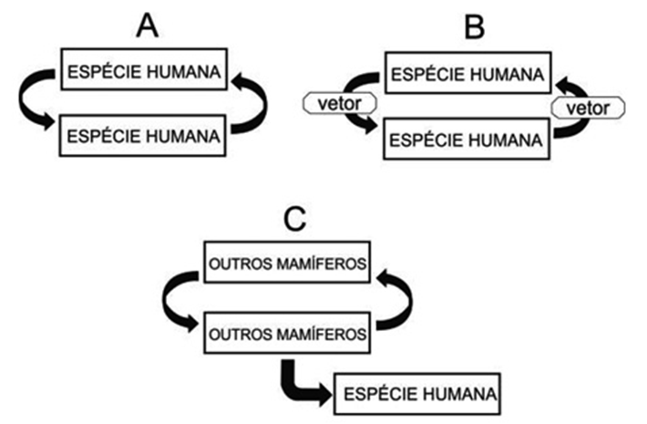
Dengue e tuberculose têm seus principais modos de transmissão representados, respectivamente, em:
- A e B.
- A e C
- B e A.
- B e C
- C e A.
9
Unesp 2018 Em uma aula de campo, os alunos encontraram, crescendo sobre um tronco caído na mata, organismos conhecidos como orelhas-de-pau. O fato que chamou a atenção dos alunos foi que alguns desses organismos eram
de cor verde, como mostra a figura.
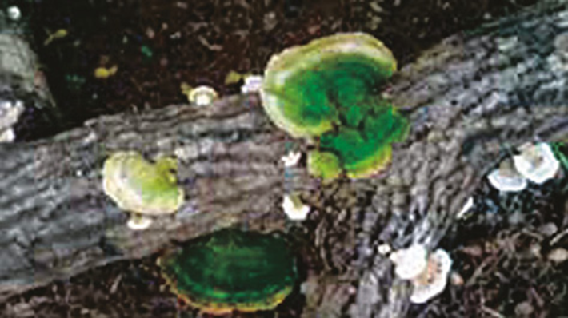
Paula afirmou que o organismo observado era um fungo fotossintetizante e, portanto, autótrofo.
Gilberto concordou que seria um fungo fotossintetizante, mas, por estar crescendo em um tronco em decomposição, seria heterótrofo necessariamente.
Ricardo sugeriu que o organismo observado, na verdade, eram dois organismos, um autótrofo e outro heterótrofo.
Tiago complementou a ideia de Ricardo, afirmando tratar-se de um musgo, que é uma associação entre um fungo e uma alga.
Fernanda discordou de Tiago, afirmando tratar-se de um líquen, no qual o fungo fornece os carboidratos necessários para o crescimento da alga.
A explicação correta para o fato foi dada por:
- Fernanda.
- Gilberto.
- Ricardo.
- Paula.
- Tiago
10
Famerp-SP 2017 A histoplasmose é uma doença respiratória que pode ter uma regressão espontânea ou evoluir para um quadro mais grave. A infecção pulmonar é benigna em pessoas saudáveis, mas, em pessoas imunocomprometidas,
pode desencadear um quadro crônico e rapidamente progressivo. O agente causador é um ser vivo eucarionte, heterótrofo e com micélios haploides. Ele produz esporos que podem ser inalados e depositados nos alvéolos pulmonares.
Fonte: Cedric A. Mims et al. Microbiologia médica, 1995. Adaptado
Para o tratamento da doença descrita no texto, um médico deverá indicar um
- fungicida.
- bactericida.
- anti-helmíntico.
- acaricida
- antiviral.
11
Enem Para preparar uma massa básica de pão, deve-se misturar apenas farinha, água, sal e fermento. Parte do trabalho deixa-se para o fungo presente no fermento: ele utiliza amido e açúcares da farinha em reações químicas que
resultam na produção de alguns outros compostos importantes no processo de crescimento da massa. Antes de assar, é importante que a massa seja deixada num recipiente por algumas horas para que o processo de fermentação
ocorra. Esse período de espera é importante para que a massa cresça, pois é quando ocorre a:
- reprodução do fungo na massa
- formação de dióxido de carbono.
- liberação de energia pelos fungos.
- transformação da água líquida em vapor d’água.
- evaporação do álcool formado na decomposição dos açúcares.
12
FGV-SP 2014 Por volta de 1850, em Manchester, Inglaterra, predominava uma população de mariposas brancas com algumas manchas negras. Após a Revolução Industrial, mariposas escuras passaram a ser encontradas em número
cada vez maior, tornando-se mais frequentes, representando cerca de 98% de toda a população (I).
Estudos realizados pelo cientista inglês H. B. Kettlewell mostraram que, em regiões não poluídas, os pássaros atacavam
principalmente as mariposas escuras, pois as brancas ficavam camufladas sobre os troncos cobertos de liquens brancos. Com a industrialização, a fuligem expelida pelas chaminés determinou a morte dos liquens, deixando os
troncos escuros e expostos (II).
Fonte: http://www.aticaeducacional.com.br. Modificado
O processo biológico ocorrido em I e a propriedade ecológica característica demonstrada pelos líquens em II são, respectivamente:
- mutação induzida e intoxicação por metal pesado.
- alteração genotípica por recombinação e fragilidade na simbiose mutualística.
- especiação e resistência ambiental negativa à poluição.
- aumento da frequência reprodutiva e resiliência ambiental desfavorável.
- seleção ambiental de fenótipos e bioindicação de poluição.
13
Enem Estudos de fluxo de energia em ecossistemas demonstram que a alta produtividade nos manguezais está diretamente relacionada às taxas de produção primária líquida e à rápida reciclagem dos nutrientes. Como exemplo
de seres vivos encontrados nesse ambiente, temos: aves, caranguejos, insetos, peixes e algas.
Dos grupos de seres vivos citados, os que contribuem diretamente para a manutenção dessa produtividade no referido ecossistema
são:
- aves
- algas
- peixes.
- insetos.
- caranguejos.
14
Fuvest-SP Frequentemente, os fungos são estudados juntamente com as plantas, na área da Botânica. Em termos biológicos, é correto afirmar que essa aproximação:
- não se justifica, pois a organização dos tecidos nos fungos assemelha-se muito mais à dos animais que à das plantas
- se justifica, pois as células dos fungos têm o mesmo tipo de revestimento que as células vegetais.
- não se justifica, pois a forma de obtenção e armazenamento de energia nos fungos é diferente da encontrada nas plantas.
- se justifica, pois os fungos possuem as mesmas organelas celulares que as plantas.
- se justifica, pois os fungos e as algas verdes têm o mesmo mecanismo de reprodução.
15
Enem Os corais funcionam como termômetros, capazes de indicar, mudando de coloração, pequenas alterações na temperatura da água dos oceanos. Mas, um alerta, eles estão ficando brancos. O seu clareamento progressivo acontece
pela perda de minúsculas algas, chamadas zooxantelas, que vivem dentro de seus tecidos, numa relação de mutualismo
Fonte: http://super.abril.com.br. Acesso em: 6 dez. 2012 (adaptado)
O desequilíbrio dessa relação faz com que os pólipos que formam os corais tenham dificuldade em:
- produzir o próprio alimento
- obter compostos nitrogenados.
- realizar a reprodução sexuada.
- absorver o oxigênio dissolvido na água.
- adquirir nutrientes derivados da fotossíntese.
16
Udesc 2016 Muitas vezes ao se pegar alguns alimentos, a exemplo, fatias de pão, depara-se com a presença de fungos.
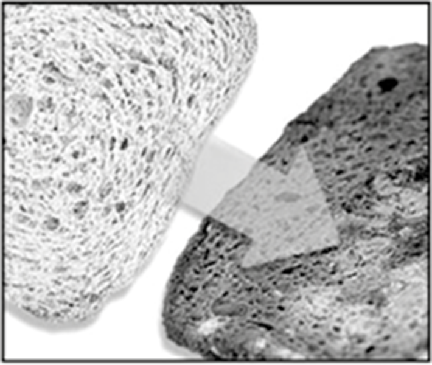
Analise as proposições com relação a estes organismos.
I. São importantes na natureza como agentes decompositores.
II. Entram na produção de alimentos de largo consumo, como pães, vinhos e alguns tipos de queijos.
III. Não possuem representantes que possam causar doenças em humanos.
IV. Alguns representantes podem se associar com algas e formar os liquens.
V. Pode ocorrer a associação deles com raízes de plantas, sendo benéfica para ambos.
Assinale a alternativa correta.
- Somente as afirmativas I, II, III e IV são verdadeiras
- Somente as afirmativas II, III, IV e V são verdadeiras.
- Somente as afirmativas III e V são verdadeiras.
- Somente as afirmativas I, II, IV e V são verdadeiras.
- Somente as afirmativas I e II são verdadeiras
17
Fuvest-SP 2018 No grupo dos fungos, são conhecidas perto de 100 mil espécies. Esse grupo tão diverso inclui espécies que:
- são sapróbias, fundamentais na ciclagem dos nutrientes, pois sintetizam açúcares a partir do dióxido de carbono do ar
- são parasitas, procariontes heterotróficos que absorvem compostos orgânicos produzidos pelos organismos hospedeiros.
- são comestíveis, pertencentes a um grupo de fungos primitivos que não formam corpos de frutificação.
- formam, com as raízes de plantas, associações chamadas micorrizas, mutuamente benéficas, pela troca de nutrientes.
- realizam respiração, na presença de oxigênio, e fotossíntese, na ausência desse gás, sendo, portanto, anaeróbias facultativas.
Maré vermelha deixa litoral em alerta.
Uma mancha escura formada por um fenômeno conhecido como "maré vermelha" cobriu ontem uma parte do canal de São Sebastião (...) e pode provocar a morte em massa de peixes. A Secretaria de Meio Ambiente de São Sebastião entrou em
estado de alerta. O risco para o ser humano está no consumo de ostras e moluscos contaminados.
Jornal Vale Paraibano, 01.02.2003.
A maré vermelha é causada por:
- proliferação de algas macroscópicas do grupo das rodófitas, tóxicas para consumo pelo homem ou pela fauna marinha.
- proliferação de bactérias que apresentam em seu hialoplasma o pigmento vermelho ficoeritrina. As toxinas produzidas por essas bactérias afetam a fauna circunvizinha.
- crescimento de fungos sobre material orgânico em suspensão, material este proveniente de esgotos lançados ao mar nas regiões das grandes cidades litorâneas.
- proliferação de liquens, que são associações entre algas unicelulares componentes do fitoplâncton e fungos. O termo maré vermelha decorre da produção de pigmentos pelas algas marinhas associadas ao fungo.
- explosão populacional de algas unicelulares do grupo das pirrófitas, componentes do fitoplâncton. A liberação de toxinas afeta a fauna circunvizinha.
19
Enem Certas espécies de algas são capazes de absorver rapidamente compostos inorgânicos presentes na água, acumulando-os durante seu crescimento. Essa capacidade fez com que se pensasse em usá-las como biofiltros para
a limpeza de ambientes aquáticos contaminados, removendo, por exemplo, nitrogênio e fósforo de resíduos orgânicos e metais pesados provenientes de rejeitos industriais lançados nas águas. Na técnica do cultivo integrado,
animais e algas crescem de forma associada, promovendo um maior equilíbrio ecológico.
SORIANO, E. M. Filtros vivos para limpar a água. Revista Ciência Hoje. V. 37, n° 219, 2005 (adaptado).
A utilização da técnica do cultivo integrado de animais e algas representa uma proposta favorável a um ecossistema mais equilibrado porque:
- os animais eliminam metais pesados, que são usados pelas algas para a síntese de biomassa.
- os animais fornecem excretas orgânicos nitrogenados, que são transformados em gás carbônico pelas algas.
- as algas usam os resíduos nitrogenados liberados pelos animais e eliminam gás carbônico na fotossíntese, usado na respiração aeróbica.
- as algas usam os resíduos nitrogenados provenientes do metabolismo dos animais e, durante a síntese de compostos orgânicos, liberam oxigênio para o ambiente.
- as algas aproveitam os resíduos do metabolismo dos animais e, durante a quimiossíntese de compostos orgânicos, liberam oxigênio para o ambientes